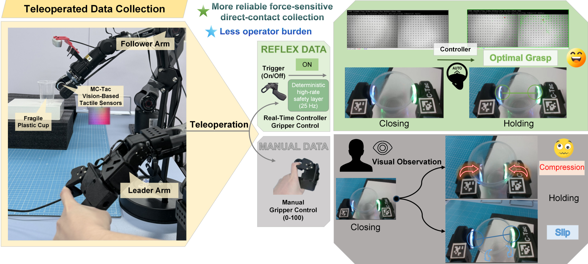
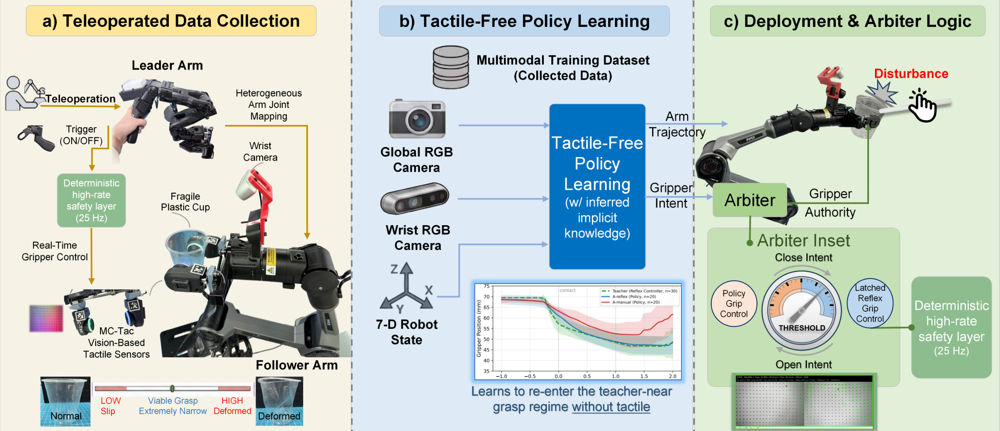

Shape the demonstration
A deterministic tactile reflex regulates the gripper at 25 Hz while the human guides the arm. We log the follower’s realized actions, including the controller’s corrections.
Human intent + tactile closed loopController-Shaped Grasping Behavior for Contact Force-Sensitive Manipulation
The Hong Kong University of Science and Technology (Guangzhou)
* Corresponding author

FROM THE AUTHORS’ REBUTTAL CLARIFICATION
We initially set out to train tactile-conditioned policies. Adding two tactile-image streams did not reliably help in our setup: ACT degraded substantially, while π0.5 retained task ability without a clear gain.
Yet policies trained on reflex-assisted demonstrations already performed well without tactile input at inference. This changed the question: instead of asking only how to fuse touch into a policy, can high-rate tactile control during collection shape demonstrations so that force-sensitive behavior becomes easier to learn?
Central claim. Tactile feedback can act as a collection-time teacher: it makes a narrow, force-valid contact regime repeatable in the demonstrations, and a tactile-free student can learn that nominal behavior.
CHANGE COLLECTION. KEEP THE POLICY INTERFACE.
A deterministic tactile reflex regulates the gripper at 25 Hz while the human guides the arm. We log the follower’s realized actions, including the controller’s corrections.
Human intent + tactile closed loopACT or π0.5 learns from RGB and robot state. Within each backbone, the main comparison keeps architecture, inputs, and training procedure fixed; the demonstration source changes.
Tactile-free policy learningAt deployment, the policy can control both arm and gripper. A second mode re-engages the tactile arbiter, retaining fast gripper authority for disturbance rejection.
Same policy · optional tactile arbiter
The controller-shaped demonstration distribution — not a staged training schedule.
MAIN CONTROLLED COMPARISON
30 training demonstrations per source.
20 nominal trials per condition.
Student inference uses no tactile input.
π₀.₅ · cross-backbone validation · Table 3
Collection-time shaping matters. Runtime arbitration only partially recovers the nominal performance of a policy trained on manual data.
30 training demonstrations per source · 20 nominal trials per condition · student inference uses no tactile input.BEYOND VISUAL SCREENING
A fresh manual pool was ranked using logged contact quality. ACT trained on its top 30 demonstrations reached 30% stable grasps (6/20), versus 95% (19/20) with reflex-shaped data.
Contact traces were used for offline selection only.WHY THE BEHAVIOR TRANSFERS
A sustained teacher-near run of at least 10 frames occurs in 15/20 reflex-data ACT episodes, versus 0/20 with visually screened manual data.
The learned effect appears in grasp trajectory shape, not only final success.NOMINAL BEHAVIOR ≠ FAST TACTILE REACTIVITY
Learning from tactile-shaped demonstrations does not transfer the full tactile feedback loop. Under randomized lateral disturbances, the same reflex-data π0.5 policy benefits from a separate 25 Hz gripper arbiter.
The policy keeps arm control. The reflex keeps fast gripper authority.
The 20/20 result is an observed outcome under this disturbance protocol, not a universal safety guarantee.
EXPLORATORY GENERALIZATION
π0.5 stable grasps for reflex-data versus visually screened manual-data: 8/10 vs. 3/10.
The trend is favorable but not statistically significant (two-sided Fisher p = 0.0698); this is preliminary scope evidence, not a broad generalization claim.SECONDARY TRAINING REFINEMENT
A gripper dynamics loss matches second-order differences in the demonstrated trajectory, improving teacher-near entry and reducing release time without adding tactile policy inputs.
Direct-contact fragile-container manipulation with a narrow viable force window. The experiments cover disposable cups, one unseen paper-cup variant, and one disturbance family. They establish a collection-time role for tactile sensing; they do not claim that tactile-free policies are generally better than tactile-conditioned policies.
THE TAKEAWAY